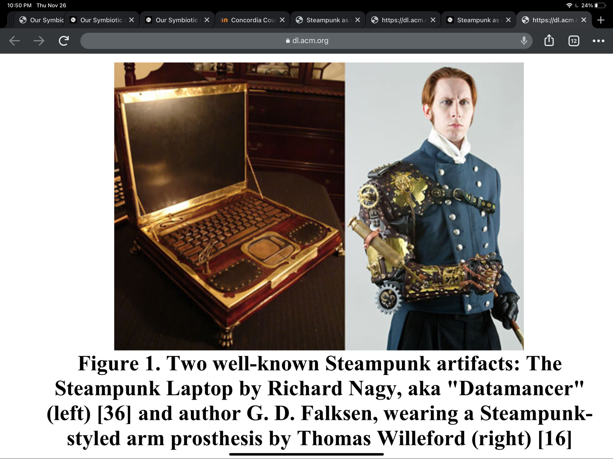

Our Symbiotic Life: An Exploration of Interspecies Relations explore the relationship between humans, plants and technology. The authors use design fiction as a tool to explore the endless possibilities in plant science and climate impact research. The designs are made to approach complex climate impact problems and to explore different solutions. The teams has created four scenarios using set of alternative futures of societal development, which is also known as shared socioeconomic pathways. The narratives are a set of five qualitative descriptions of plausible future changes in demographics, human development, economies, lifestyles, policies, institutions, technologies, environments, and natural resources. The first scenario is Harmony, where the world is crowded by self-driving landscapes using biological power, people are mindful of using sustainable resources and embracing an ecological lifestyle. The second scenario is Invasion. Invasive specie has become the biggest environmental problem that humans have to work on. Different regions of the world struggle to maintain good climate policies due to the political tensions. Deforestation causes a wave of extinctions and frequent forest fire. The third scenario is On Demand. Plants are trendy items that people can print and put together themselves. People are optimistic towards fixing climate changes with bioengineering, and society is focused on technological innovation. The forth scenario is Bottle Garden. Inequality and stratification extend to extremes in the world. A highly eutrophic algae that accumulates contaminants has developed due to high level of pollution and waste. Since they can produce energy under the right circumstances, people start to use them to generate energy. These DIY battery are often used by members of poorer communities.
Overall, design fiction is an interesting way to explore potential ecological solutions and observe our current climate problem from a different perspective. The science-fiction-like scenarios serve as a tool from the future to encourage the readers to look back at our current timeline and reflect on the possible outcomes of our current lifestyle. Design fiction can also be an easier pathway to introduce complex environmental problems to the general public. It provides how designers could envision futures, and also how new technologies are positioned within a new context in the distant future (Levin 2016). I have also found other design fictions that spark my interest. Theresa Jean Tanenbaum, Karen Tanenbaum, & Ron Wakkary from Simon Fraser University propose steampunk as a design strategy using design fiction. “Steampunk fiction and design evokes an alternate history that weds aspects of the modern day, such as computation, to elements of Victorian aesthetics, materials and culture (Tanenbaum 2012). Steampunk, as an aesthetic and a movement, combines the element of steam power being the dominant form of energy in the world, the fantasy of future technologies, and the culture of DIY. This study on Steampunk in design fiction reminds me of the fourth scenario, Bottle Garden. In both future scenarios, people are taking the responsibility of creating energy into their own hands, the culture of DIY is also dominant in groups of younger population in these scenarios. Both design fictions reflect on how we can reuse materials, and how we can consume energy differently in the future than we do now.
Two well- known Steampunk artifacts: The Steampunk Laptop by Richard Nagy; Author G.D.Falksen wearing a Steam-link style arm prosthesis by Thomas Willeford (Tanenbaum 2012)
The first scenario in the study seems to be the most ideal. We become a collective society, mindful of what we consume and how we consume. We also arrive at a balance with nature, using sustainable energy to maintain an ecological lifestyle.
Bibliography
Katja Budinger, Frank Heidmann. Our Symbiotic Life: An Exploration of Interspecies Relations. 2019.
Davis Levine. Design Fiction. Digital Experience Design. 2016.
Theresa Jean Tanenbaum, Karen Tanenbaum, & Ron Wakkary. Steampunk as Design Fiction. Simon Fraser University. 2012.